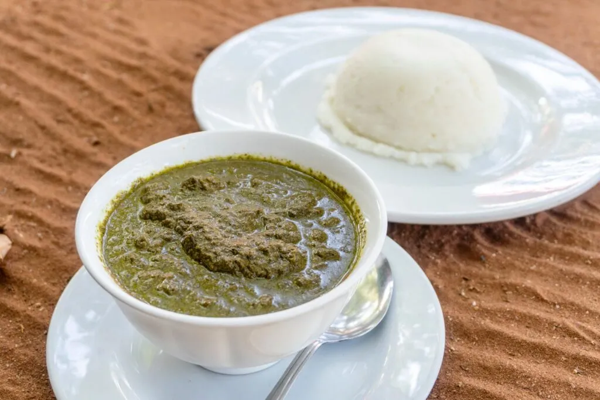
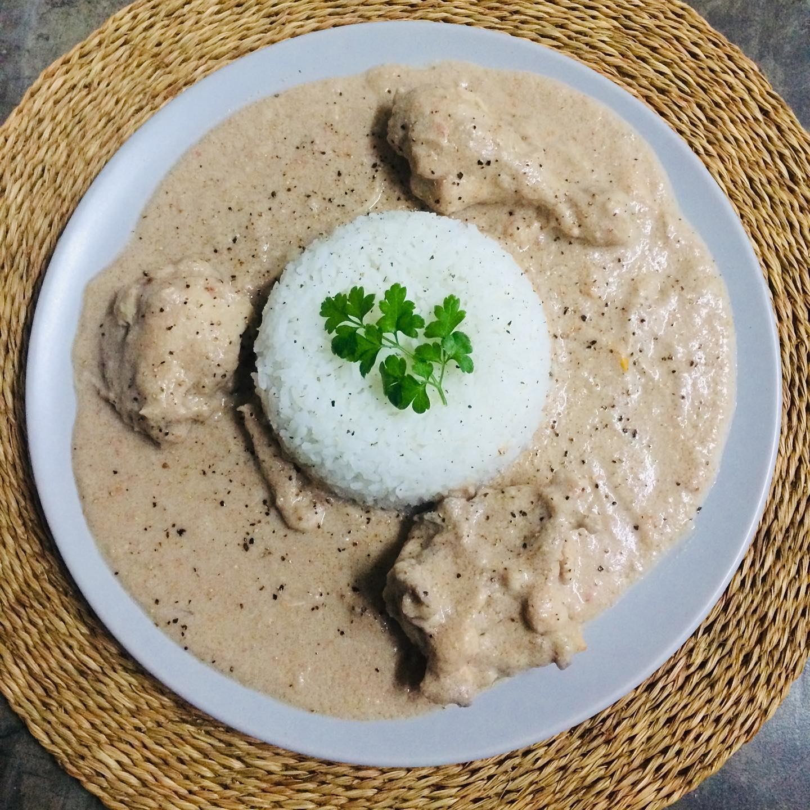
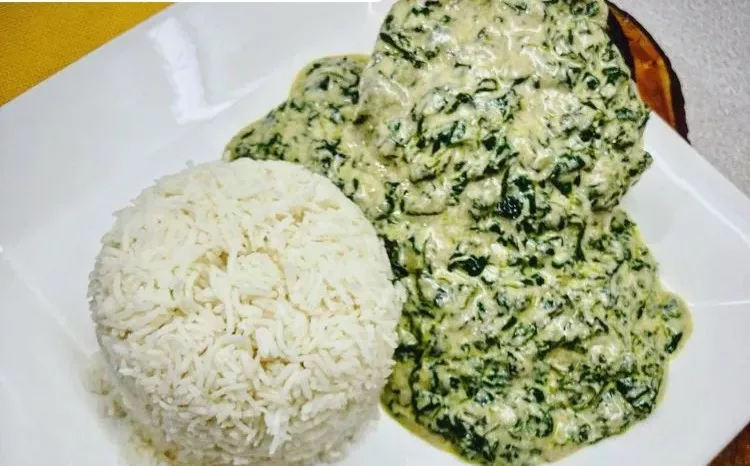
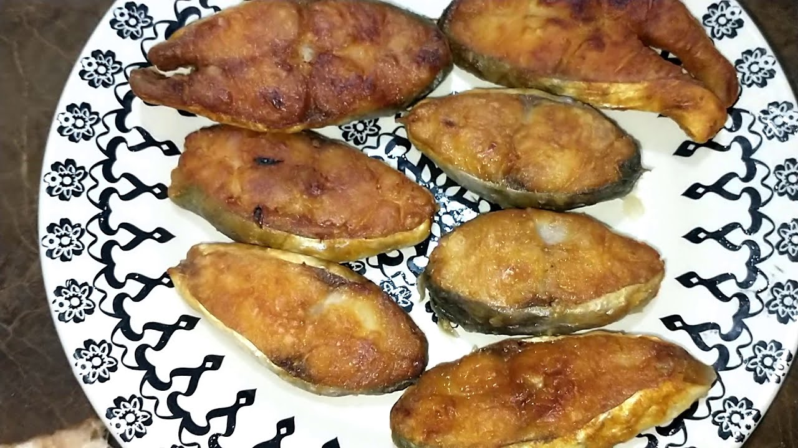

Matapa
A Matapa é considerada um dos pratos mais emblemáticos de Moçambique e representa profundamente a identidade cultural e gastronómica do país. Preparada tradicionalmente com folhas de mandioca piladas, leite de coco e amendoim, a Matapa possui uma textura cremosa e um sabor intenso, rico em tradição e autenticidade. Em muitas regiões moçambicanas, o prato é frequentemente acompanhado por camarão, caranguejo ou peixe seco, criando uma combinação perfeita entre os sabores da terra e do mar. Servida normalmente com arroz branco ou xima, a Matapa é presença constante em encontros familiares, festividades e celebrações culturais.

Frango de Amendoim
O frango de amendoim destaca-se pelo seu molho cremoso e pelo sabor marcante e intenso, sendo um dos pratos mais apreciados da culinária moçambicana. Preparado com uma combinação de amendoim, alho, cebola e tomate, resulta num molho rico, espesso e cheio de sabor, que envolve o frango de forma perfeita. Este prato é muito comum em refeições familiares e em ocasiões especiais, pois representa conforto e tradição à mesa. Normalmente é servido com arroz branco ou xima, permitindo equilibrar o sabor forte do molho com acompanhamentos simples. Mais do que uma simples refeição, o frango de amendoim simboliza a criatividade da gastronomia moçambicana, que transforma ingredientes simples em pratos cheios de identidade e sabor.

Caril de Cacana
Preparado com folhas de cacana, este prato possui um sabor característico levemente amargo, muito valorizado na culinária tradicional moçambicana. É uma receita muito apreciada em várias regiões do país, especialmente por quem valoriza sabores autênticos e naturais da terra. A cacana é cozinhada lentamente e geralmente combinada com ingredientes como amendoim e leite de coco, o que ajuda a equilibrar o sabor amargo e a dar uma textura mais cremosa ao prato. O resultado é uma refeição rica, nutritiva e cheia de identidade cultural. Normalmente é servido com arroz ou xima, sendo presença frequente em refeições familiares, mantendo viva uma das tradições mais antigas da gastronomia moçambicana.

Carne de Porco
A carne de porco é muito apreciada em várias regiões de Moçambique, sendo presença comum em refeições familiares e ocasiões especiais. Quando bem preparada, destaca-se pelo seu sabor intenso e pela textura suculenta, que a torna ainda mais apetecível. É normalmente temperada com alho, ervas aromáticas e limão, ingredientes que realçam o seu sabor natural e garantem um resultado equilibrado e aromático. Dependendo da preparação, pode ser assada ou cozinhada lentamente, ficando macia por dentro e cheia de sabor.

Peixe Serra
Muito consumido nas zonas costeiras de Moçambique, o peixe-serra destaca-se pela sua carne branca, fresca e extremamente saborosa. É um dos peixes mais apreciados pela sua textura leve e pelo sabor natural do mar, que se mantém mesmo após a preparação. Geralmente é grelhado ou assado, sendo temperado com alho, limão e especiarias simples que realçam o seu sabor sem o esconder. É um prato muito popular em refeições familiares e em restaurantes à beira-mar, representando a forte ligação da culinária moçambicana com o oceano.